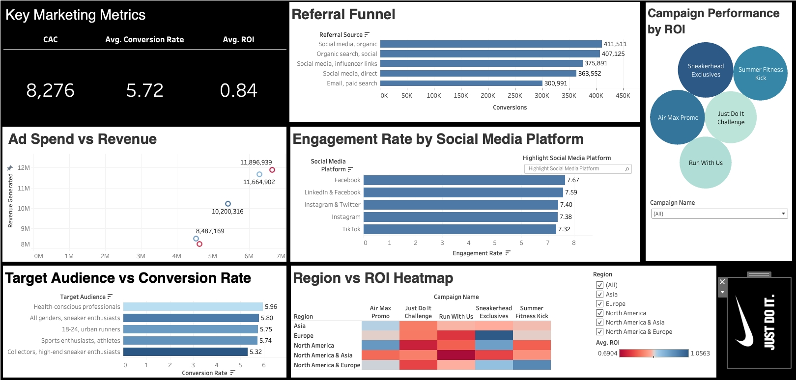

Strategic Marketing
The following projects highlight my experience in strategic marketing, campaign development, and brand management for a local business.
Course assignment️-Enhancing Digital Marketing for Nike-
May, 2025
This project aims to evaluate the effectiveness of Nike’s recent digital marketing campaigns and provide data-driven recommendations for improvement. Using a dataset of 500 records, including campaign information, performance metrics, financial data, and customer demographics—an interactive Tableau dashboard was developed.
The dashboard is designed to:
Visualize key performance indicators such as ROI, conversion rate, and customer acquisition cost
Compare campaign performance across channels, regions, and audience segments
Identify high-performing and underperforming campaigns
Provide strategic insights to support future marketing decisions
Data Source:
Course Material
Tools:
Tableau
Learning Outcomes:

Learned how to use data visualization tools (Tableau) to evaluate the performance of digital marketing campaigns
Understood that a high conversion rate does not always lead to a high ROI; customer value matters more than volume
Realized the importance of targeting the right audience instead of aiming for broad exposure
Discovered that customer preferences vary significantly by region, and using the same ad strategy everywhere can result in poor performance
Gained experience in deriving strategic recommendations from data, such as repositioning the brand as a premium and collectible sneaker label
Concluded that Nike should focus on high-ROI niche markets, such as sneaker collectors and trend-conscious buyers—and design region-specific campaigns that highlight uniqueness, style, and exclusivity
Recommendations for Coffee Shops in the Post-Pandemic Era ☕️
Sep, 2024-Aug, 2025
The COVID-19 pandemic changed how people shop and how businesses operate. Coffee shops, which usually depend on customers visiting in person, had to adjust as people worked from home and prioritized safety. This study looks at how a national coffee shop chain used digital marketing to deal with these changes. The goal is to show how online strategies can help coffee shops keep customers happy, build loyalty, and increase sales. This study also fills in gaps about how digital marketing can meet new customer needs and provide suggestions for coffee shops to grow in the future.
Data Source:
Survey
Tools:
R
Learning Outcomes:
Understanding Attitudes Toward Mask-Wearing:
Learn why people are willing or not willing to wear a mask (e.g., to protect themselves, protect others, or because of habit).
See how these attitudes affect their behavior when visiting coffee shops or other places.
Improving Data Analysis Skills:
Choose different types of charts based on the type of data.
Use the right visualization tools depending on the situation.